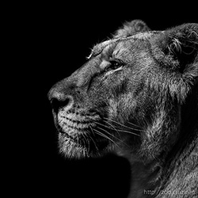
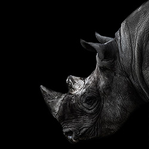

言葉のない対話 -The zoological garden-
Photography
インドライオン Lion
インドライオン（学名Panthera leo persica）は、哺乳綱食肉目ネコ科ヒョウ属に分類されるライオンのひとつの亜種で、アフリカに生息するライオンと比較すると小柄であり、体色も薄い。昔は南西ヨーロッパからインドにかけて広く分布していたが、現在ではインド北西部のグジャラート州ギル保護区にのみに生息している。
体の大きさや毛の長さ、体色などが地域によって異なるので下記の亜種があるとされている。アフリカに生息するライオン達の亜種とインドライオンの亜種では大きな違いがある為、アフリカライオンとインドライオンと分けての比較をした。
スマトラトラ Sumatran Tiger
スマトラトラ（英名：Sumatran Tiger）は、トラの中で最小の亜種である。また現存する亜種の中で最も南に生息し、唯一島に生息しているトラでもある。生息域は、インドネシア国スマトラ島の熱帯モンスーン林であり、野生下での生息数は300～500頭と推測されるが、詳しくは不明。インドネシア国では絶滅危機から守るため、1995年よりスマトラトラプロジェクトが開始され、野生での研究や保護活動などが行われている。
クロサイ Diceros bicornis
クロサイ（黒犀、Diceros bicornis）は、哺乳綱ウマ目（奇蹄目）サイ科クロサイ属に分類されるサイ。本種のみでクロサイ属を構成する。
藪地に生息するが、山地の森林に生息することもある。ンゴロンゴロの個体群ではオス26,000ヘクタール、メス259-4400ヘクタールの行動圏内で生活する。薄明薄暮性で、昼間は木陰などで休む。単独で生活するが、以前は約10頭からなる小規模な群れを形成することもあった。水浴びを好むが、乾季には泥浴びも行う。危険を感じると突進し威嚇することもある。走行速度は時速50キロメートルに達する。時には母娘で集団をつくっていることもある。
Profile
Yutaka Hayashi
2001年、有限会社ムーニーワークス（http://moonyworks.com/）を設立。WEB制作の他、記事執筆、セミナー講演、企業研修などを行う。
また、クリエイター育成機関デジタルハリウッドでは1999年より教鞭をとる。2004年からは、デジタルハリウッド大学大学院、明治大学大学院非常勤講師を歴任。
2012年からはデジハリオンラインスクールにてHTML5をはじめWEB関連講座のeラーニング教材の開発に携わり、会社・自宅のPCからいつでも「HTML5」を学べる講座を担当。